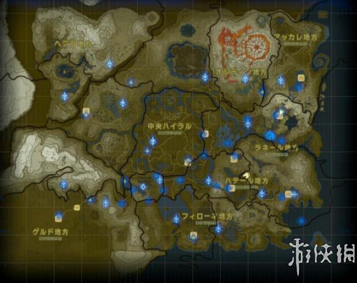
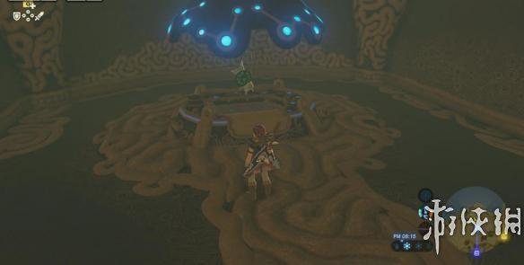
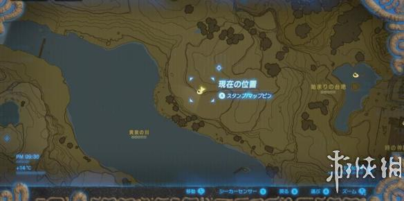
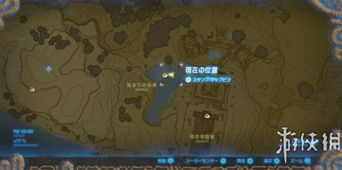

在塞尔达传说荒野之息里，玩家可以在山边水边、石头底屋顶上，各种犄角旮旯的位置找到小精灵 Korok（コログ），它们会给玩家种子。今天小编为大家带来的就是塞尔达传说荒野之息中央海拉尔地区种子收集图文攻略，感兴趣的朋友快来看看吧！
中央海拉尔地区种子收集图文攻略
先从林克的出发地，中央海拉尔地区开始。

初始的台地
【始まりの台地/ Great Plateau】
位置：林克苏醒的遗迹，那个维生槽中。


时之神殿旁边的水塘里，有一圈叶子，跳进圈内即可发现精灵。
